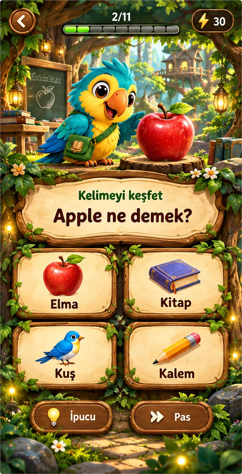

<!doctype html><html lang="tr"><meta charset="utf-8"><meta name="robots" content="noindex"><title>Diji-Medu Orman Atölyesi</title><style>body{margin:0;text-align:center;background:#e9e5da;font:14px system-ui}header{padding:10px}button{padding:8px;margin:3px}section{display:flex;gap:24px;justify-content:center;flex-wrap:wrap}figure{margin:0}figcaption{padding:8px;font-weight:bold}img{width:390px;height:844px;object-fit:fill}iframe{display:block;border:0;margin:auto;width:390px;height:844px}</style><header><button onclick="size(320,568)">Küçük telefon</button><button onclick="size(390,844)">iPhone</button><button onclick="size(844,390)">Yatay ekran</button><select aria-label="Soru türü" onchange="document.getElementById('preview').src='forest-workshop-preview-inner.html?v=3&type='+this.value"><option value="lab">Kelime Laboratuvarı</option><option value="risk">Risk Balonları</option><option value="eksik">Eksik Harf</option><option value="hafiza">Hafıza Sandığı</option><option value="hiz">Hız Fırtınası</option><option value="harf">Harf Avı</option><option value="sifre">Şifre Kırıcı</option><option value="es">Eş Bul</option><option value="tren">Kelime Treni</option><option value="cumle">Cümle Ustası</option><option value="dikte">Kulak Dedektifi</option></select></header><section><figure><figcaption>Beğendiğin örnek</figcaption></figure><figure><figcaption>Çalışan soru paneli</figcaption><iframe id="preview" src="forest-workshop-preview-inner.html?v=3" title="Soru panelleri"></iframe></figure></section><script>function size(w,h){let f=document.getElementById('preview');f.style.width=w+'px';f.style.height=h+'px'}</script></html>